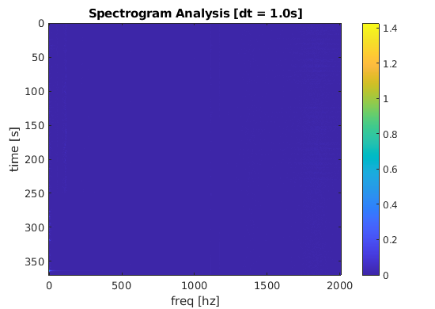
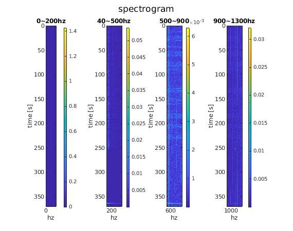

Contents
imuData = readtable('/home/jaehan/log/211215_131651_rooftop_test_toktok/aSensorLog_211215_131651.csv');
parseStart = 1;
parseEnd = size(imuData,1);
imuTime = datetime(imuData.rosTime(1:end),'ConvertFrom','posixtime','TimeZone','Asia/Tokyo');
imuTimeS = imuData.rosTime(parseStart:parseEnd) - imuData.rosTime(1);
acc_0 = imuData.acc_mpss_0(parseStart:parseEnd);
acc_1 = imuData.acc_mpss_1(parseStart:parseEnd);
acc_2 = imuData.acc_mpss_2(parseStart:parseEnd);
gyro_0 = imuData.gyro_dps_0(parseStart:parseEnd);
gyro_1 = imuData.gyro_dps_1(parseStart:parseEnd);
gyro_2 = imuData.gyro_dps_2(parseStart:parseEnd);
Fs = round(1/mean(diff(imuTimeS)));
L = size(imuTimeS,1);
disp("Data Loading Complete!")
Data Loading Complete!
pre processing
acc_0 = detrend(acc_0,1);
acc_1 = detrend(acc_1,1);
acc_2 = detrend(acc_2,2);
gyro_0 = detrend(gyro_0,1);
gyro_1 = detrend(gyro_1,1);
gyro_2 = detrend(gyro_2,1);
y = gyro_0(1:L);
timeStep = .5;
dspec = timeStep * Fs;
specNum = floor(L/dspec);
spectrogram = [];
for i = 1:specNum
y_spec = y(dspec*(i-1)+1:dspec*i);
[freq,fftResult,~] = data2fftpsd(y_spec,Fs);
spectrogram(i,1:length(freq)) = fftResult';
end
spectrogram(:,length(freq)+1:end) = [];
figure(8)
imagesc([freq(1) freq(end)],[imuTimeS(1) imuTimeS(end)],spectrogram(:,1:end));
xlabel('freq [hz]')
ylabel('time [s]')
title('Spectrogram Analysis [dt = 1.0s]')
colorbar
figure(88)
clf
sgtitle('spectrogram')
subplot(1,4,1)
imagesc([0 200],[imuTimeS(1) imuTimeS(end)],spectrogram(:,0*timeStep+1:200*timeStep));
colorbar
xlabel('hz')
ylabel('time [s]')
title('0~200hz')
hold on
subplot(1,4,2)
imagesc([40 500],[imuTimeS(1) imuTimeS(end)],spectrogram(:,40*timeStep:500*timeStep));
hold on
xlabel('hz')
ylabel('time [s]')
title('40~500hz')
colorbar
subplot(1,4,3)
imagesc([500 900],[imuTimeS(1) imuTimeS(end)],spectrogram(:,500*timeStep:900*timeStep));
hold on
xlabel('hz')
ylabel('time [s]')
title('500~900')
colorbar
subplot(1,4,4)
imagesc([900 1300],[imuTimeS(1) imuTimeS(end)],spectrogram(:,900*timeStep:1300*timeStep));
hold on
xlabel('hz')
ylabel('time [s]')
title('900~1300hz')
colorbar
 